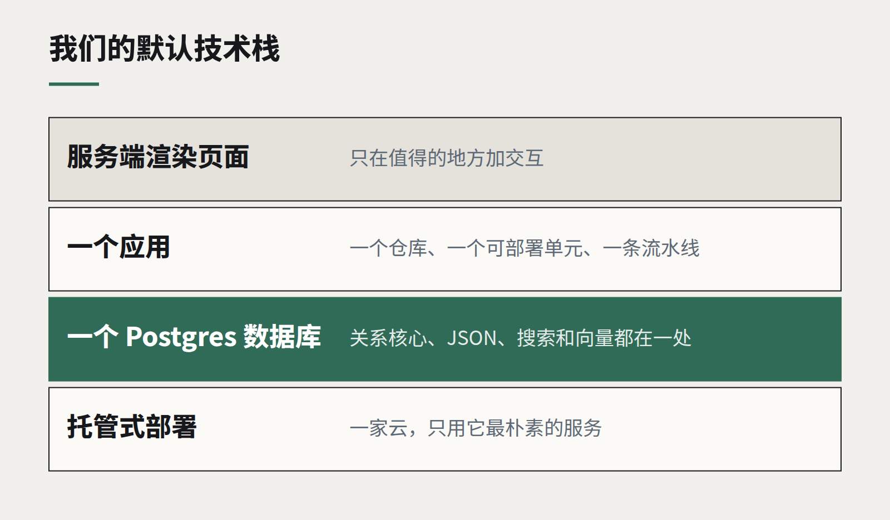

“无聊”的技术栈正在胜出，这是好消息
一个关系型数据库、服务端渲染的页面、一家大家都熟悉的云。去年我们见过最可靠的系统，用的全是没人会放上大会幻灯片的组件。

每隔几年，行业就会重新发现：能工作的最简单架构，通常真的就能工作。今年正是这样的一年。过去十二个月里我们为客户评审过的系统中，运行最便宜、最容易交接、改起来最快的那些，都有一个共同点：它们很“无聊”。
这里的“无聊”有具体含义：一个关系型数据库，通常是 Postgres；大部分页面在服务端渲染的应用；只用一家云厂商，而且主要用它最朴素的服务；真正需要队列的地方才用队列；一套新同事第一天下午就能看懂的部署流程。
钟摆为什么摆了回来
过去十年，行业为“规模问题”准备了一整套工具：微服务、事件流、多种数据库混用、一切都放在客户端。这些都是解决真实问题的真实工具。麻烦在于，大多数新西兰企业并没有这些问题。一家有四万客户、十来个开发者的公司，面对的不是 Netflix 式的难题，而是招人难、交接难、预算紧。
复杂度有持续的运行成本，而这笔成本很少出现在最初的商业论证里。每多一个服务，就多一样要监控、打补丁、做安全、写说明的东西；每多一个数据存储，就多一个记录可能对不上的地方。等最初搭建它的团队离开，架构图就成了考古文物。

“无聊”能换来什么
- 出错的方式更少。 一个单体应用连一个数据库，故障模式屈指可数，而且都有完善的文档。分布式系统的故障是排列组合。
- 人更好招。 Postgres、主流 Web 框架、标准云平台，这些技能在奥克兰或基督城都能招到，不用付猎头溢价。
- 改得更快。 一个功能只动一个代码库、一套表结构，一天就能上线；要动四个服务，就得先开个会。
- 成本透明。 一台数据库服务器加几个应用实例，账单能预测到几个百分点以内。
“无聊”不等于“陈旧”
这不是在反对新技术。现代 Postgres 能做的事，过去要三个独立产品：JSON 文档、全文检索、用于 AI 检索的向量相似度、逻辑复制。现代服务端渲染框架能做出交互丰富的页面，而不必下发一兆字节的 JavaScript。选择“无聊”，是选择成熟工具的当前版本，而不是停留在 2012 年。
它也不意味着永远不拆分。当系统中某一部分确实有不同的扩展、安全或发布需求——支付集成、繁重的批处理、有自己客户的公共 API——就把它拆出去。检验标准是：你能不能说出是哪一种具体压力让这条边界值得存在。
一个好用的默认选项
开始一个新项目时，我们的默认方案是：一个代码仓库、一个可部署的应用、一个 Postgres 数据库、服务端渲染页面并只在值得的地方加交互、托管式部署。任何偏离这个默认方案的决定，都要书面论证，并把运行成本算进去。
大多数项目从来不需要偏离它。需要偏离的那些，也会因为被迫说清理由而变得更好。